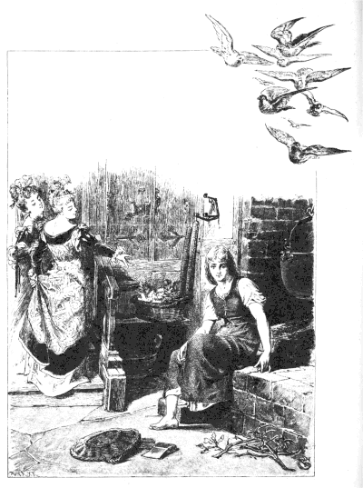

あるお
金持ちのうちで、そのうちのおくさんが
病気になりました。おくさんは、もういよいよじぶんはだめだと感じましたので、ひとりむすめの小さい女の子をまくらもとによびよせて、こういいました。
「あのね、いつまでも
神さまを
信じて、すなおな心でいるんですよ。そうすれば、神さまは、いつもおまえのそばについていてくださるからね。おかあさんもおまえを
天国から見まもっていて、おまえのそばをはなれませんよ。」
おかあさんはこういって、目をつぶりました。そして、そのまま、この
世をさってしまったのです。
女の子は、まい日、おかあさんのお
墓のところへいっては、
泣いてばかりいました。でも、神さまを
信じて、すなおな心でいました。
やがて、冬になりますと、雪がそのお墓の上に白い
布をひろげました。それから、春になって、お日さまがその布をとりのけるようになったころ、お金持ちのうちには、またべつのおくさんがきました。
こんどのおくさんは、じぶんのむすめをふたりつれてきました。そのむすめたちは、顔だけは白くてきれいでしたが、心のなかときたら、ひねくれていて、まっ黒でした。ですから、かわいそうな
ままむすめの女の子にとっては、それからは、つらい日がまい日つづくことになりました。
「このあほうなガチョウむすめったら、うちんなかにすわりこんでいるよ。」
と、
まま母やそのむすめたちが口ぐちにいいました。
「ごはんが食べたかったら、だれだってじぶんでかせぐんだよ。さあ、さっさといって、
女中といっしょにおはたらき。」
こういうと、みんなは、女の子のきていたきれいな
着物をぬがせて、そのかわりに、ネズミ色の古ぼけたうわっぱりをきせて、木ぐつをはかせました。
「ちょいと、この
高慢ちきなお
姫さまをごらんよ。ずいぶんおめかししたこと。」
みんなはこうはやしたてながら、大わらいをして、女の子を
台所につれていきました。
それからというものは、まい日まい日、女の子はつらいしごとをしなければなりませんでした。朝は日のでるまえにおきだして、水をはこび、火をもやし、
煮ものをし、せんたくをしました。
ところが、そういうつらいしごとがあるうえに、ねえさんたちは、つぎからつぎへと、いろんなことを考えだしては、女の子をいじめたり、ののしったりするのです。そして、わざと
豆つぶを
灰のなかにぶちまけては、女の子がいやでもすわって、それをひろいださなければならないようにしむけるのでした。
一日じゅうはたらいたあとで、どんなにくたびれきっていても、
晩には、
寝床にはいらずに、かまどのそばの
灰のなかに横にならなければなりませんでした。ですから、この子はいつもほこりだらけで、よごれたかっこうをしていましたので、みんなはこの子のことを、「灰かぶり」「灰かぶり」とよびました。
ある日のこと、おとうさんが
市へでかけることになりました。それで、おとうさんは、ふたりのきょうだいに、
「おみやげにはなにがほしいね。」
と、たずねました。
「きれいな
着物よ。」
と、ひとりがいいました。
「あたしは
真珠と
宝石。」
と、もうひとりがいいました。
「ところで、
灰かぶり、おまえはなにがほしいな。」
と、おとうさんがききました。
「おとうさん、それじゃ、おとうさんがかえっていらっしゃるとき、いちばんさきにおとうさんのぼうしにさわった木の
小枝を、おってきてちょうだい。」
さて、おとうさんは、ふたりのままむすめのおみやげに、きれいな
着物と、それに、
真珠と
宝石とを買いました。
それから、馬にのってかえってきました。やがて、とある青あおとした
木立に、さしかかりました。すると、一本のハシバミの
小枝にぶっつかって、ぼうしがおちてしまいました。そこで、おとうさんはその枝をおって、もってかえりました。
うちにかえると、おとうさんは、ふたりのままむすめに、めいめいのほしがっていたものをやりました。それから、
灰かぶりには、ハシバミの小枝をやりました。
灰かぶりはおとうさんにお
礼をいって、おかあさんのお
墓のところへいき、その
小枝をお墓の上にうえました。そして、
泣いて泣いて泣きじゃくりましたので、
涙がはらはらとこぼれおちて、その小枝にふりかかりました。おかげで、小枝はずんずん大きくなって、美しい木になりました。
灰かぶりは、まい日三度、その木の下へいって、泣きながら、おいのりをしました。すると、そのたびに、一
羽の白い
小鳥がその木の上にとんできては、灰かぶりがほしいというものを、なんでもおとしてくれました。
さて、お話かわって、この国の王さまが大きな
宴会をもよおすことになりました。その宴会は、三日もつづくことになっていました。そして、その宴会には、国じゅうの美しいむすめたちが、ひとりのこらずまねかれていました。つまり、その人たちのなかから、
王子の花よめになる人をさがしだそうというわけだったのです。
ふたりのまま子のきょうだいは、じぶんたちもその
宴会にでられることになっているときかされて、大よろこびでした。それで、
灰かぶりをよびつけて、
「さあ、あたしたちの
髪をすいておくれ。くつもみがいておくれ。それから、しめ
金で
胸をぎゅっとしめておくれ。あたしたちは、王さまの宴会によばれて、お
城へいくんだからね。」
灰かぶりは、ねえさんたちのいうとおりにしてやりました。けれども、
泣きました。むりもありません、灰かぶりだって、いっしょにいって、おどりたかったのですもの。それで、まま母に、
「あたしもいかせてください。」
と、おねがいしてみました。
「なにをいってるの、
灰かぶり。そのほこりだらけの、きたならしいかっこうで
宴会へいこうっていうのかい。だいいち、
着物もくつもないのに、おどろうっていうの。」
と、まま母はいいました。
でも、灰かぶりがしきりにおねがいしましたので、まま母もとうとう、
「それじゃ、灰のなかに、おさらに一ぱいぶんのお
豆がぶちまけてあるから、それを二時間のうちにひろいなさい。そうしたら、いっしょにつれてってやるよ。」
と、いいました。

女の子はうら口から
庭へでて、大きな声でよびました。
「
飼いバトちゃんに、山バトちゃん、それから、お空の下の
小鳥ちゃん、みんなでここへとんできて、あたしのお
豆ひろいの、お手つだいをしてちょうだい。
いいお豆は つぼのなか
いけないお豆は 餌ぶくろに。」
その声をききつけて、たちまち、白い小バトが二
羽、
台所の
窓からはいってきました。つづいて山バトが、いく羽もいく羽もはいってきました。そのうちに、バタバタ、バタバタ、
羽の音をたてながら、空の下の鳥が一羽のこらずあつまってきて、
灰のまわりにおりたちました。
小バトたちはかわいい頭をさげて、こつこつこつとやりだしました。すると、ほかの鳥たちも、みんな、こつこつこつとやりだしました。そして、いいほうの
豆つぶはひとつのこらず、おさらのなかにひろいいれました。
こうして、一時間たつかたたないうちに、みんなは灰のなかからすっかり豆つぶをひろいだして、またおもてへとびだしていきました。
そこで、女の子は大よろこびで、おさらをまま母のところへもっていきました。そして、これで
宴会へつれていってもらえるものとばかり思っていました。ところがまま母は、
「だめだめ、
灰かぶり。おまえなんか
着物もないじゃないか。それにおどりなんてできやしないよ。みんなのわらいものになるだけさ。」
と、いうのです。
それをきいて、女の子がわっと
泣きだしますと、まま母は、
「それじゃ、一時間のうちに、
灰のなかから、お
豆をふたつのおさらにいっぱいひろいだせたら、いっしょにつれてってやるよ。」
と、いいました。
でも、
腹のなかでは、
（そんなことは、とてもできっこないさ。）
と、思っていたのです。
まま母がふたさらぶんのお
豆を
灰のなかにぶちまけてしまいますと、女の子はうら口から
庭へでて、大きな声でよびました。
「
飼いバトちゃんに、山バトちゃん、それから、お空の下の
小鳥ちゃん、みんなでここへとんできて、あたしのお豆ひろいの、お手つだいをしてちょうだい。
いいお豆は つぼのなか
いけないお豆は 餌ぶくろに。」
その声をききつけて、たちまち、白い小バトが二
羽、
台所からはいってきました。つづいて、山バトが、いく羽もいく羽もはいってきました。そのうちに、バタバタ、バタバタ、
羽の音をたてながら、空の下の小鳥が一羽のこらずあつまってきて、灰のまわりにおりたちました。
小バトたちはかわいい頭をさげて、こつこつこつとやりだしました。すると、ほかの鳥たちも、みんなこつこつこつとやりだしました。そして、いいほうの豆つぶは、ひとつのこらずおさらのなかにひろいいれました。
こうして、三十分とはたたないうちに、みんなは
灰のなかからすっかり
豆つぶをひろいだして、またおもてへとびだしていきました。そこで女の子は大よろこびで、おさらをまま母のところにもっていきました。そして、こんどこそ、
宴会へつれていってもらえるものと思っていました。ところが、まま母は、
「なにをしたって、おまえはだめだよ。おまえなんかいっしょにつれていけやしない。だって、
着物もなけりゃ、おどりもできないじゃないか。おまえをつれていったりすれば、わたしたちがはじをかくにきまっているよ。」
こういいおわると、まま母はくるりとむこうをむいて、
高慢ちきなふたりのむすめをつれて、さっさといってしまいました。
うちにだれもいなくなりますと、
灰かぶりはおかあさんのお
墓のハシバミの木の下へいって、大きな声でよびかけました。
ねえ ハシバミさん ゆれてうごいて
金と銀とをおとしてちょうだいな
すると、いつもの鳥が、金と銀の糸で
織った着物と、
絹糸と銀の糸でぬいとりした
上ぐつとをおとしてくれました。女の子は、おおいそぎで着物をきかえて、
宴会へでかけていきました。
でも、ねえさんたちにも、まま母にも、これが
灰かぶりだとはわかりません。たぶん、どこかよその国のお
姫さまだろうと思っていました。
金の
着物をきた
灰かぶりはそれほど美しく見えたのです。
三人は、これが灰かぶりだとは
夢にも考えてみませんでした。いまごろ、あの灰かぶりはうちで、きたないもののなかにすわって灰のなかから
豆でもさがしているだろうと思っていたのです。
灰かぶりのすがたを見ますと、
王子はさっそくむかえにでて、その手をとって、いっしょにおどりはじめました。そして、ほかのものとはだれともおどろうとはしませんでした。ですから、王子はいちどとった灰かぶりの手を、いつまでもはなしませんでした。だれかほかのものがやってきて、灰かぶりといっしょにおどりたいといっても、王子は、
「このひとはぼくの
相手だよ。」
と、いって、ことわりました。
おどっているうちに、日がくれましたので、
灰かぶりはうちにかえろうとしました。すると王子は、
「ぼくがいっしょにおくっていってあげよう。」
と、いいだしました。
というわけは、王子は、この美しいむすめがどこのむすめなのか、知りたかったのです。でも、灰かぶりは王子のそばをうまくすりぬけて、ハト
小屋にとびこみました。
王子がそとで
待っていますと、やがて、灰かぶりのおとうさんがでてきました。そこで、王子はおとうさんに、いまよそのむすめがこのハト
小屋にとびこんだ、と、おしえてやりました。その話をきいて、おとうさんは、
（いまはいったのなら、それは
灰かぶりのはずだが。）
と、思いました。
そこで、おとうさんはおのと
なたをもってこさせて、ハト小屋をまっぷたつにたたきわってみました。でも、なかにはだれひとりおりません。
それから、みんながうちのなかへはいってきますと、灰かぶりはいつものよごれた
着物をきて、灰のなかにねころんでいました。そして
豆ランプがひとつ、
煙出しのなかでぼんやりともっていました。つまりそれは、こういうわけだったのです。灰かぶりは、ハト小屋のなかにとびこみましたが、すばやく小屋のうしろからとびだして、あのハシバミの木の下へかけていったのでした。そこで、きれいな
着物をぬいで、お
墓の上におきますと、いつもの鳥がそれをどこかへもっていってしまったのでした。いっぽう、灰かぶりは、それから、ネズミ色のいつものうわっぱりをきて、
台所へはいって、灰のなかにもぐりこんでいたのです。
そのつぎの日にも、また
宴会がもよおされました。おとうさんとおかあさんと、それに、ふたりのねえさんたちがでかけてしまいますと、灰かぶりは、さっそく、ハシバミの木のところへいって、よびかけました。
ねえ ハシバミさん ゆれてうごいて
金と銀とをおとしてちょうだいな
すると、いつもの鳥が、きのうよりも、ずっとずっとりっぱな
着物をなげおとしてくれました。
灰かぶりがこの着物をきて、
宴会の
席にあらわれますと、だれもかれもがその美しさにあっとおどろいてしまいました。
ところで、
王子は、灰かぶりのくるのをずっと
待っていました。ですから、灰かぶりのすがたを見ますと、すぐにその手をとって、灰かぶりとばかりおどりつづけました。だれかほかのものがやってきて、灰かぶりといっしょにおどりたいといっても、王子は、
「これはぼくの
相手だよ。」
と、いって、ことわりました。
そのうちに、日がくれましたので、
灰かぶりはうちにかえろうとしました。すると、王子はあとからついていって、灰かぶりがどこのうちにはいるか見ようとしました。
ところが、灰かぶりは、王子のそばからすばやくにげだして、うちのうしろの
庭のなかにとびこみました。
庭には美しい大きな木が一本はえていて、それには、まことにみごとなナシの
実がなっていました。
灰かぶりはリスのようにすばしこく、この木によじのぼって、たちまち、
枝と枝とのあいだにかくれてしまいました。そのため、
王子には、灰かぶりがどこへいってしまったのやら、わからなくなりました。
でもそこで
待っていますと、やがて、
灰かぶりのおとうさんがやってきました。そこで、おとうさんに、
王子はいいました。
「よそのむすめが、ぼくのところからにげだして、あのナシの木の上にとびあがってしまったらしい。」
それをきいて、おとうさんは、
（木の上にとびあがったのなら、それは
灰かぶりのはずだが。）
と、思いました。
そこで、おのをもってこさせて、その木を切りたおしました。けれども、木の上にはだれもいませんでした。
それから、みんなが
台所にはいってきますと、灰かぶりは、いつものように、灰のなかにねころんでいました。
じつをいうと、それはこういうわけなのです。つまり、灰かぶりは木のむこうがわにとびおりて、ハシバミの木の上のいつもの鳥に、きれいな
着物をかえしておいて、じぶんは、ネズミ色のいつものうわっぱりにきかえていたのでした。
三日めにも、おとうさんとまま母が、ねえさんたちをつれてでかけてしまいますと、
灰かぶりは、またおかあさんのお
墓のところへいって、ハシバミの木によびかけました。
ねえ ハシバミさん ゆれてうごいて
金と銀とをおとしてちょうだいな
すると、いつもの鳥が
着物をなげおとしてくれました。ところが、その着物ときたら、目もさめるように美しくて、きらびやかで、それこそ、まだだれもきたことのないようなものでした。それに、
上ぐつはぜんぶ
金でできているというすばらしさです。
ですから、
灰かぶりがこの着物をきて、
宴会の
席へあらわれたときには、だれもかれもが、ただただおどろきあきれるばかりで、なんといったらいいのか、わからないくらいでした。
王子は、灰かぶりとばかり、ずっとおどりつづけました。だれかがやってきて、灰かぶりといっしょにおどりたいといっても、王子は、
「このひとはぼくの
相手だよ。」
と、いって、ことわりました。
そのうちに、日がくれましたので、
灰かぶりはかえろうとしました。もちろん、王子はあとからついていくつもりでした。ところが、灰かぶりがあんまりすばやくにげてしまいましたので、とうとう、あとからついていくことができませんでした。
でも、王子は、きょうは
計略をめぐらして、
階段じゅうにチャンというべたべたする
薬をぬらせておきました。そのため、灰かぶりが階段にとびおりたとたん、左の上ぐつがべったりとチャンにくっついて、そのままあとにのこってしまいました。
王子がそのくつをとりあげてみますと、それはちっちゃくて、きれいで、ぜんぶ金でできていました。
そのつぎの朝、
王子はそのくつをもって、あの
金持ちの男のところへいきました。そして、
「この
金のくつがぴったり足にあう女を、ぼくは
妻にしたいのだ。」
と、いいました。
それをきいて、ふたりのきょうだいはよろこびました。だって、ふたりともきれいな足をしていましたからね。
まず、ねえさんのほうが、そのくつをもってへやのなかにはいり、ためしてみようとしました。まま母もそのそばに立っていました。
ところが、足の指が大きすぎるために、どうしてもはいりません。だいいち、くつぜんたいが小さすぎます。そのようすを見て、まま母はほうちょうをわたしながら、
「足の指なんか、切ってしまいなさいよ。お
妃さまになれば、もう足で歩くこともなくなるからね。」
と、いいました。
むすめは足の指を切りおとして、くつのなかに、むりやりに足をおしこみました。そして、いたいのをやっとがまんしながら、へやをでて、
王子のところへいきました。
そこで、王子はこのむすめを花よめとして馬にのせ、いっしょにそこをでかけました。ところが、ふたりは、あのお
墓のそばをとおっていかなければなりませんでした。すると、ハシバミの木にとまっていた二
羽のハトが、
ちょいとうしろを見てごらん
ちょいとうしろを見てごらん
くつのなかは血がいっぱい
だってくつがちいちゃすぎるもの
ほんとのよめさん うちにいる
と、よびかけました。
こういわれて、
王子がむすめの足もとを見ますと、なるほど、血がそとまでながれでています。
王子はすぐさま馬のむきをかえて、にせの花よめを、またうちへつれていきました。そして、
「このむすめはほんものではないから、もうひとりのきょうだいにくつをはかせてみなさい。」
と、いいました。
そこで、こんどは、妹のほうがへやのなかにはいりました。うまいぐあいに、足の指はくつのなかにはいりましたが、
かかとが大きすぎます。そのようすを見ますと、まま母がほうちょうをわたして、いいました。
「かかとのすこしぐらい、切ってしまいなさいよ。お
妃さまになれば、もう足で歩くこともなくなるからね。」
むすめはかかとをすこし切りとって、くつのなかに、足をむりやりにおしこみました。そして、いたいのをやっとがまんしながら、へやをでて、
王子のところへいきました。
そこで、王子はこのむすめを花よめとして馬にのせ、いっしょにでかけていきました。ふたりがハシバミの木のそばをとおりかかりますと、木の
枝にハトが二
羽とまっていて、
ちょいとうしろを見てごらん
ちょいとうしろを見てごらん
くつのなかは血がいっぱい
だってくつがちいちゃすぎるもの
ほんとのよめさん うちにいる
と、うたいました。
いわれて、王子がむすめの足を見おろしますと、なるほど、くつから血がながれでて、しかも、白いくつしたが上のほうまでまっかにそまっています。
そこで、王子はすぐさま馬のむきをかえて、にせの花よめをまた家へつれていきました。
「このむすめもほんものではない。もう、ほかにむすめはないのかね。」
と、王子はいいました。
「ございません。」
と、お
金持ちの男がいいました。
「もっとも、なくなりました
家内がのこしていったむすめがひとりおりますが、これは
発育もおくれておりまして、いつも
灰だらけのきたないかっこうをしております。とても、花よめになれるようなものではございません。」
すると、
王子は、
「そのむすめをここへつれてきなさい。」
と、いいました。
ところが、まま母は、
「まあ、とんでもないことでございます。とてもきたなすぎて、こちらへつれてまいれるようなものではございません。」
と、もうしました。
けれども、王子がどうしても見たいというので、とうとう灰かぶりがよびだされることになりました。それで、灰かぶりは、まず両手と顔とをきれいにあらいました。それから、でてきて、王子のまえでおじぎをしました。
王子は灰かぶりに
金のくつをわたしました。そこで、灰かぶりは
足台にこしかけて、おもたい木ぐつから足をぬきだして、
上ぐつにいれてみました。ところが、どうでしょう。くつはぴったりと灰かぶりの足にあっています。
それから、灰かぶりは立ちあがりました。王子がその顔を見ますと、それこそ、じぶんといっしょにおどった、あの美しいむすめではありませんか。それで、王子は思わず大きな声をだして、
「これがほんとうの花よめだ。」
と、いいました。
まま母とふたりのきょうだいは、びっくりしました。そして、くやしさのあまり、まっさおになりました。
けれども
王子は、そんなことにはおかまいなく、
灰かぶりを馬にのせて、いっしょにでかけました。ふたりがハシバミの木のそばをとおりかかりますと、二
羽の白いハトが声をそろえて、
ちょいとうしろを見てごらん
ちょいとうしろを見てごらん
くつのなかには血がないよ
くつはちいちゃすぎないもの
こんどは ほんとの花よめつれていく
と、うたっていました。ハトは、こううたってから、二羽ともまいおりてきて、
灰かぶりの
肩の上にとまりました。一羽は右に、一羽は左に。そして、そのまま、ずっとそこにとまっていました。
いよいよ灰かぶりと王子との
婚礼がおこなわれることになりました。そのとき、にせの花よめになった、ふたりのきょうだいがやってきて、さかんにおせじをふりまきました。こうして、ふたりは灰かぶりのしあわせを、わけてもらおうと思ったのです。
花よめ、花むこが
教会へいくときには、ねえさんのほうは右がわに、妹のほうは左がわにつきそって歩いていきました。すると、二
羽のハトがとんできて、きょうだいの目玉を、ひとつずつ、つつきだしてしまいました。
それから、式がすんででてきたときには、ねえさんのほうは左がわに、妹のほうは右がわにつきそっていました。すると、二羽のハトが、きょうだいのもうひとつずつのこっている目玉をつつきだしました。
こんなわけで、ふたりのきょうだいは、いじわるをしたり、にせの花よめになったりしたばちがあたって、
一生目が見えませんでした。